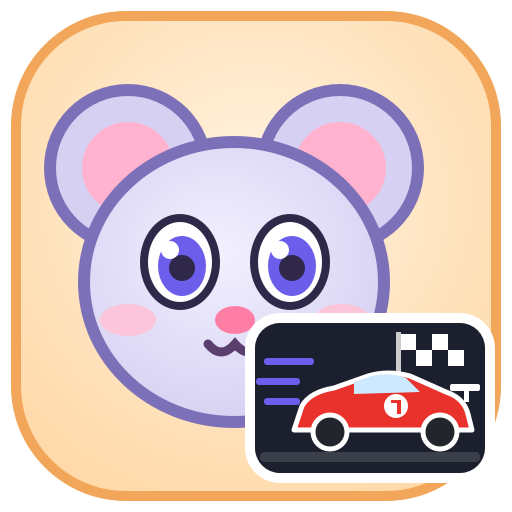
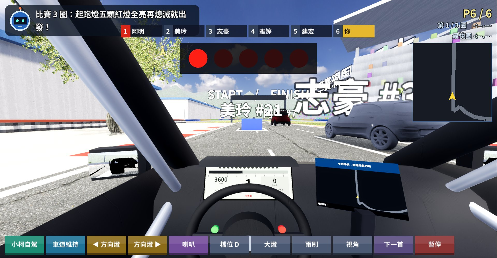
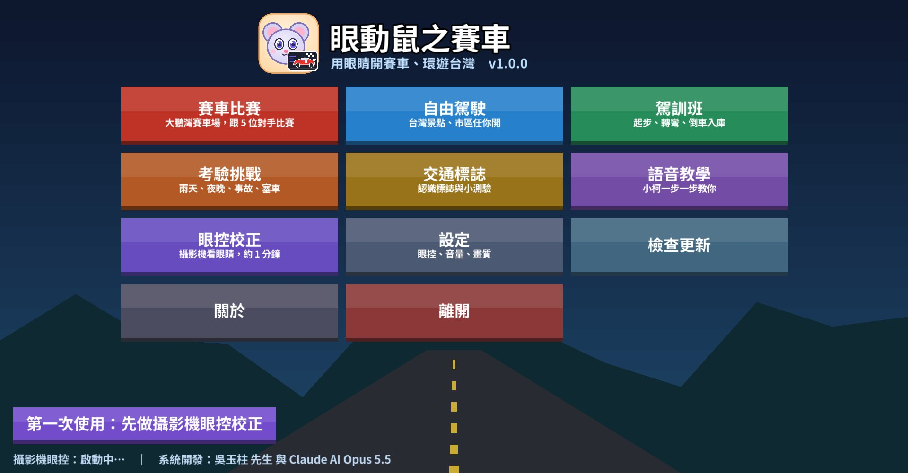

眼動鼠之賽車
用眼睛開賽車：只要一台網路攝影機，眼睛和轉頭就能控制鏡頭；在大鵬灣國際賽車場跟 5 位對手比賽，也能開遍台北、高雄、日月潭、太魯閣、墾丁與國道，小柯機器人 AI 陪你開。


不用買眼動儀，一台網路攝影機就能追蹤眼睛和頭部；影像只在電腦裡處理，不會上傳。
頭轉一點、鏡頭轉多一點；看畫面邊緣就看過去，紫色圈顯示你看的位置。
看著會動的點、再照指示轉頭，電腦就學會你的眼睛，最後顯示準確度。
跟 5 位對手比賽：起跑燈、圈速、名次；可選圈數、難度、夜間賽、雨戰。
數位儀表、換檔燈、防滾籠、導航平板與後照鏡；視野廣角可調。
台北、國道一號、日月潭、高雄、太魯閣、墾丁與駕訓場；交通標誌辨識。
一般道路照號誌行駛；賽車場跑賽車線、會超車。
小柯一步一步語音教學；程式內一鍵更新到新版。
目前提供 Windows 10／11、macOS、線上版、iPhone／iPad 與 Android 版。
線上版不用安裝，用電腦瀏覽器（Chrome、Edge、Safari）打開就能玩；第一次要下載約 200 MB 的遊戲資料，請耐心等候。攝影機眼控在瀏覽器裡執行（影像不上傳），第一次按「眼控校正」時瀏覽器會詢問相機權限，請按「允許」。程式內更新需要安裝電腦版。
iPhone／iPad：用 Safari 打開「iPhone／iPad 安裝」頁按安裝（Ad Hoc 版，限已登記的裝置），請橫放；用手指點按操作，小柯可以幫你開。iPad 可開「設定 › 輔助使用 › 眼動追蹤」用眼睛操作；想用攝影機眼控鏡頭，可以在 Safari 開線上版。
Android：下載 APK 後點開安裝（第一次要允許「安裝不明來源的應用程式」），請橫放手機；需要 64 位元（arm64）手機。按住畫面下方的油門、煞車、左右鍵開車，小柯會幫你維持車道。
macOS 第一次開啟：把「眼動鼠之賽車」拖到「應用程式」，對著它按右鍵 →「打開」→ 再按「打開」（程式未經 Apple 公證）。第一次使用攝影機眼控時會詢問相機權限，請按「好」；如果不小心按了不允許，到「系統設定 › 隱私權與安全性 › 相機」打開「眼動鼠之賽車」。Intel 與 Apple 晶片的 Mac 都能用。
第一次使用請先在主選單按「眼控校正」（約 1 分鐘）：坐正、離螢幕 50～70 公分、正面光線充足。也可以搭配 眼動鼠（Tobii 眼動儀），或用滑鼠、鍵盤、方向盤操作。
建議使用有獨立顯示卡的電腦；內建顯示卡可在設定裡把畫質調成「省電」。